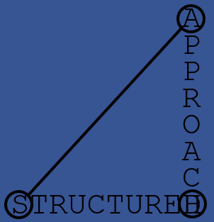

About

I am a data-smith 1 and coder seeking community dialogue about the direction of software.
Jensen Huang predicted in 2017 that "AI is going to eat software" in a neat reference to Marc Andreessen's prediction in 2011 that software is eating the world. Perhaps these soundbites are intended to inspire healthy thoughts of natural selection, but they go a step further with a questionable ring of canibalism to them. More recently similar concerns have been excacerbated by the questionabe predictions of a pathway from LLMs to AGI, and irresponsible attitudes towards the possibility of a technological singularity.
One unquestionable change has been the growing reliance on web connections across large areas of human endeavour including software. Sir Tim Berners-Lee's excellent book This Is For Everyone explains how it is important for everyone that the web serves everyone. I like his idea of transforming the web from an attention economy to an intention economy, and furthermore I think the need to transform our tools applies at a level down from the web also : i.e. software tools.
Software is an important medium through which humans are given agengy. If AI were to swallow software humans would lose out. Instead I propose the term "natural computing" as both the literal opposite and the logical accompaniment to "artificial intelligence" : the ability to instruct computers could be made much more accessible to all, to the point where it becomes a basic literacy.
-
The term data-smith is introduced here to describe people who work with data, in a loosely similar way to a blacksmith works with iron, or a locksmith works with locks. ↩